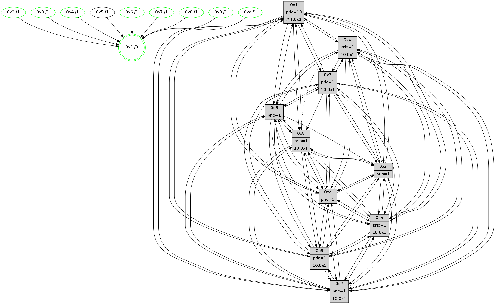

>> << IDX [start] -100 -25 -5 +0 +5 +25 +100 [1195.23514009]
 Previous packets
----------------------------------------------------------------------
1190.506352 beacon01(faad) #0 coord=01,02,03,04,05,06,07,0a,09,08 cycle=688.0ms assoc
-- color-indic=1 64 aa 7c
1190.516335 beacon02(faad) #0 coord=01,02,03,04,05,06,07,0a,09,08 cycle=688.0ms assoc 64 39 4d
1190.526334 beacon03(faad) #0 coord=01,02,03,04,05,06,07,0a,09,08 cycle=688.0ms assoc 64 43 00
1190.536335 beacon04(faad) #0 coord=01,02,03,04,05,06,07,0a,09,08 cycle=688.0ms assoc 64 34 ea
1190.546334 beacon05(faad) #0 coord=01,02,03,04,05,06,07,0a,09,08 cycle=688.0ms assoc 64 4e a7
1190.556335 beacon06(faad) #0 coord=01,02,03,04,05,06,07,0a,09,08 cycle=688.0ms assoc 64 c0 70
1190.566335 beacon07(faad) #0 coord=01,02,03,04,05,06,07,0a,09,08 cycle=688.0ms assoc 64 ba 3d
1190.576341 beacon0a(faad) #0 coord=01,02,03,04,05,06,07,0a,09,08 cycle=688.0ms assoc 64 cb 36
1190.586342 beacon09(faad) #0 coord=01,02,03,04,05,06,07,0a,09,08 cycle=688.0ms assoc 64 45 e1
1190.596341 beacon08(faad) #0 coord=01,02,03,04,05,06,07,0a,09,08 cycle=688.0ms assoc 64 3f ac
1190.608466 [Hello(5): seq=760 sym=7,6,4,3,1,9,8,10,2 sysInfo=hasWarning stat=7:13,10,11,13/6:14,3,10,2/4:12,2,3,13/3:2,14,3,14/1:3,3,1,0/9:1,13,2,9/8:10,11,15,2/10:5,10,1,8/2:13,1,4,6]
1190.611435 [Hello(6): seq=760 sym=2,3,5,4,7,9,8,10,1 sysInfo=hasWarning stat=2:3,6,0,0/3:15,14,0,12/5:1,2,2,1/4:1,9,14,5/7:6,2,9,12/9:1,11,6,8/8:7,7,2,5/10:0,8,5,12/1:9,1,1,1]
1190.615475 [Hello(2): seq=756 sym=4,5,7,6,3,9,8,10,1 sysInfo=hasWarning stat=4:15,5,9,11/5:2,11,13,0/7:8,0,10,14/6:13,6,12,11/3:4,3,13,9/9:3,6,1,7/8:0,1,8,11/10:2,10,2,10/1:10,5,13,0]
1190.619506 [Hello(1): seq=669 sym=4,2,9,5,10,3,8,6,7 sysInfo=coloring-mode-on,ColoringModeRequestCalled stat=4:1,2,1,0/2:2,3,6,2/9:3,5,0,0/5:11,8,0,7/10:14,14,12,6/3:7,9,1,7/8:8,8,1,3/6:3,9,8,14/7:10,11,3,14]
1190.622601 [Color(2) seq=336 @0:0 prio=1 >10.@1,1.@3,1.@4,1.@5]
1190.625849 [Color(10) seq=349 @0:0 prio=1]
1190.629904 [Color(6) seq=392 @0:0 prio=1]
1190.632027 [Hello(3): seq=760 sym=1,7,2,4,8,9,10,5 sysInfo=hasWarning stat=1:4,2,15,0/7:8,3,0,12/2:7,13,3,0/4:15,0,3,11/8:3,15,13,4/9:13,4,5,14/10:10,8,13,4/5:1,0,10,15]
1190.636657 [Color(3) seq=389 @0:0 prio=1]
----------------------------------------------------------------------
1191.294486 beacon01(faad) #0 coord=01,02,03,04,05,06,07,0a,09,08 cycle=688.0ms assoc
-- color-indic=1 64 16 79
1191.304469 beacon02(faad) #0 coord=01,02,03,04,05,06,07,0a,09,08 cycle=688.0ms assoc 64 85 48
1191.314470 beacon03(faad) #0 coord=01,02,03,04,05,06,07,0a,09,08 cycle=688.0ms assoc 64 ff 05
1191.324470 beacon04(faad) #0 coord=01,02,03,04,05,06,07,0a,09,08 cycle=688.0ms assoc 64 88 ef
1191.334469 beacon05(faad) #0 coord=01,02,03,04,05,06,07,0a,09,08 cycle=688.0ms assoc 64 f2 a2
1191.344470 beacon06(faad) #0 coord=01,02,03,04,05,06,07,0a,09,08 cycle=688.0ms assoc 64 7c 75
1191.354470 beacon07(faad) #0 coord=01,02,03,04,05,06,07,0a,09,08 cycle=688.0ms assoc 64 06 38
1191.364475 beacon0a(faad) #0 coord=01,02,03,04,05,06,07,0a,09,08 cycle=688.0ms assoc 64 77 33
1191.374474 beacon09(faad) #0 coord=01,02,03,04,05,06,07,0a,09,08 cycle=688.0ms assoc 64 f9 e4
1191.384475 beacon08(faad) #0 coord=01,02,03,04,05,06,07,0a,09,08 cycle=688.0ms assoc 64 83 a9
1191.396976 [Hello(10): seq=693 sym=6,2,3,8,7,5,9,4,1 sysInfo=hasWarning stat=6:4,6,0,1/2:4,1,3,10/3:9,3,9,11/8:4,4,14,2/7:6,7,6,6/5:4,13,15,14/9:2,12,6,3/4:12,6,6,0/1:6,8,11,1]
1191.402392 [Hello(8): seq=704 sym=5,2,3,9,6,10,1 sysInfo=hasWarning stat=5:8,2,7,0/2:1,3,4,10/3:11,9,8,0/9:7,12,9,3/6:11,6,6,13/10:2,12,12,4/1:7,0,1,0]
1191.405222 [Hello(7): seq=760 sym=2,3,5,6,4,8,9,10,1 sysInfo=hasWarning stat=2:7,12,12,1/3:13,5,13,0/5:15,11,8,1/6:11,9,9,9/4:10,9,7,1/8:5,9,1,0/9:1,5,0,0/10:5,11,13,5/1:8,0,2,0]
1191.408283 [Color(8) seq=359 @0:0 prio=1 >10.@1,1.@2,1.@3,1.@4]
1191.411121 [Color(4) seq=317 @0:0 prio=1 >10.@1,1.@2,1.@3,1.@5]
1191.417199 [Color(9) seq=333 @0:0 prio=1 >10.@1,1.@2,1.@3,1.@4]
1191.418983 [STC(1) #0.187 tree-change,inconsistent-stability,stable,to-color d=0]
1191.421587 [Color(1) seq=441 @0:0 prio=10 >>1.@2,1.@3,1.@4]
1191.426038 [Color(7) seq=306 @0:0 prio=1 >10.@1,1.@2,1.@3,1.@4]
----------------------------------------------------------------------
1192.082617 beacon01(faad) #0 coord=01,02,03,04,05,06,07,0a,09,08 cycle=688.0ms assoc
-- color-indic=1 64 d2 77
1192.092599 beacon02(faad) #0 coord=01,02,03,04,05,06,07,0a,09,08 cycle=688.0ms assoc 64 41 46
1192.102598 beacon03(faad) #0 coord=01,02,03,04,05,06,07,0a,09,08 cycle=688.0ms assoc 64 3b 0b
1192.112599 beacon04(faad) #0 coord=01,02,03,04,05,06,07,0a,09,08 cycle=688.0ms assoc 64 4c e1
1192.122600 beacon05(faad) #0 coord=01,02,03,04,05,06,07,0a,09,08 cycle=688.0ms assoc 64 36 ac
1192.132599 beacon06(faad) #0 coord=01,02,03,04,05,06,07,0a,09,08 cycle=688.0ms assoc 64 b8 7b
1192.142601 beacon07(faad) #0 coord=01,02,03,04,05,06,07,0a,09,08 cycle=688.0ms assoc 64 c2 36
1192.152604 beacon0a(faad) #0 coord=01,02,03,04,05,06,07,0a,09,08 cycle=688.0ms assoc 64 b3 3d
1192.172606 beacon08(faad) #0 coord=01,02,03,04,05,06,07,0a,09,08 cycle=688.0ms assoc 64 47 a7
1192.183561 [STC(4)->1 #0.187 tree-change,inconsistent-stability,stable,to-color d=1]
1192.184866 [STC(9)->1 #0.187 tree-change,inconsistent-stability,stable,to-color d=1]
1192.186748 [Hello(5): seq=761 sym=7,6,4,3,1,9,8,10,2 sysInfo=hasWarning stat=7:14,11,11,13/6:15,4,10,2/4:13,3,3,13/3:3,15,3,14/1:4,4,2,0/9:1,14,2,9/8:11,12,15,2/10:6,11,1,8/2:14,2,4,6]
1192.195729 [Color(3) seq=390 @0:0 prio=1]
1192.197212 [STC(6)->1 #0.187 tree-change,inconsistent-stability,stable,to-color d=1]
1192.198801 [STC(5)->1 #0.187 tree-change,inconsistent-stability,to-color d=1]
1192.200251 [Color(6) seq=393 @0:0 prio=1]
1192.201545 [Hello(1): seq=670 sym=4,2,9,5,10,3,8,6,7 sysInfo=coloring-mode-on,ColoringModeRequestCalled stat=4:1,2,1,0/2:2,4,6,2/9:3,5,0,0/5:11,8,0,7/10:15,15,12,6/3:8,10,1,7/8:8,8,1,3/6:3,10,8,14/7:10,12,3,14]
1192.206592 [STC(2)->1 #0.187 tree-change,inconsistent-stability,stable,to-color d=1]
1192.210155 [Color(2) seq=337 @0:0 prio=1 >10.@1,1.@3,1.@4,1.@5]
1192.212940 [STC(8)->1 #0.187 tree-change,inconsistent-stability,stable,to-color d=1]
1192.218214 [Color(10) seq=350 @0:0 prio=1]
----------------------------------------------------------------------
1192.870747 beacon01(faad) #0 coord=01,02,03,04,05,06,07,0a,09,08 cycle=688.0ms assoc
-- color-indic=1 64 6e 72
1192.880730 beacon02(faad) #0 coord=01,02,03,04,05,06,07,0a,09,08 cycle=688.0ms assoc 64 fd 43
1192.890730 beacon03(faad) #0 coord=01,02,03,04,05,06,07,0a,09,08 cycle=688.0ms assoc 64 87 0e
1192.900729 beacon04(faad) #0 coord=01,02,03,04,05,06,07,0a,09,08 cycle=688.0ms assoc 64 f0 e4
1192.910730 beacon05(faad) #0 coord=01,02,03,04,05,06,07,0a,09,08 cycle=688.0ms assoc 64 8a a9
1192.920731 beacon06(faad) #0 coord=01,02,03,04,05,06,07,0a,09,08 cycle=688.0ms assoc 64 04 7e
1192.930732 beacon07(faad) #0 coord=01,02,03,04,05,06,07,0a,09,08 cycle=688.0ms assoc 64 7e 33
1192.940734 beacon0a(faad) #0 coord=01,02,03,04,05,06,07,0a,09,08 cycle=688.0ms assoc 64 0f 38
1192.950735 beacon09(faad) #0 coord=01,02,03,04,05,06,07,0a,09,08 cycle=688.0ms assoc 64 81 ef
1192.960735 beacon08(faad) #0 coord=01,02,03,04,05,06,07,0a,09,08 cycle=688.0ms assoc 64 fb a2
1192.972592 [Hello(10): seq=694 sym=6,2,3,8,7,5,9,4,1 sysInfo=hasWarning stat=6:4,6,0,1/2:4,1,3,10/3:9,3,9,11/8:5,5,14,2/7:7,8,6,6/5:5,13,15,14/9:2,13,7,3/4:13,7,7,0/1:6,9,12,1]
1192.975664 [Hello(4): seq=761 sym=5,7,6,2,3,9,10,1 sysInfo= stat=5:15,7,2,15/7:2,5,6,1/6:2,3,4,12/2:5,6,13,14/3:15,15,5,12/9:8,5,9,11/10:1,11,12,13/1:0,7,4,1]
1192.978374 [Color(4) seq=318 @0:0 prio=1 >10.@1,1.@2,1.@3,1.@5]
1192.982002 PARSE ERROR************************
Traceback (most recent call last):
File "PacketAnalysis.py", line 167, in showOperaPacket
structPacket = OperaPacketParse.parsePacket(rawPacket)
File "../../pkg-python/HipSens/Core/OperaPacketParse.py", line 461, in parsePacket
return parseHelloMessage(data)
File "../../pkg-python/HipSens/Core/OperaPacketParse.py", line 109, in parseHelloMessage
sysInfo,stability,colorInfo = struct.unpack("!HBB", linkList[0:4])
error: unpack requires a string argument of length 4
48 34 09 00 02 c1 00 02 02 12 02 00 05 00 03 00 04 00 07 00 06 00 08 00 0a 00 01 00 53 04 00 02 00 00 4c 12 80 89 51 c2 06 1a 01 20 15 a6 bd e7 32 d2 45 cf 15 a5 53 55
1192.984832 [Color(9) seq=334 @0:0 prio=1 >10.@1,1.@2,1.@3,1.@4]
1192.987749 [Hello(8): seq=705 sym=5,2,3,9,6,10,1 sysInfo=hasWarning stat=5:8,2,7,0/2:1,3,4,10/3:11,9,8,0/9:7,13,9,3/6:11,6,6,13/10:3,13,12,4/1:7,1,2,0]
1192.991276 [Color(8) seq=360 @0:0 prio=1 >10.@1,1.@2,1.@3,1.@4]
1192.994371 [Hello(7): seq=761 sym=2,3,5,6,4,8,9,10,1 sysInfo=hasWarning stat=2:8,13,13,1/3:13,6,13,0/5:0,11,9,1/6:12,10,10,9/4:10,9,8,1/8:5,9,2,0/9:1,5,1,0/10:6,12,13,5/1:9,0,2,0]
1192.999093 [Color(7) seq=307 @0:0 prio=1 >10.@1,1.@2,1.@3,1.@4]
1193.004972 [Color(1) seq=442 @0:0 prio=10 >>1.@2,1.@3,1.@4]
----------------------------------------------------------------------
1193.658878 beacon01(faad) #0 coord=01,02,03,04,05,06,07,0a,09,08 cycle=688.0ms assoc
-- color-indic=1 64 5a 6a
1193.668862 beacon02(faad) #0 coord=01,02,03,04,05,06,07,0a,09,08 cycle=688.0ms assoc 64 c9 5b
1193.678859 beacon03(faad) #0 coord=01,02,03,04,05,06,07,0a,09,08 cycle=688.0ms assoc 64 b3 16
1193.688861 beacon04(faad) #0 coord=01,02,03,04,05,06,07,0a,09,08 cycle=688.0ms assoc 64 c4 fc
1193.698861 beacon05(faad) #0 coord=01,02,03,04,05,06,07,0a,09,08 cycle=688.0ms assoc 64 be b1
1193.708861 beacon06(faad) #0 coord=01,02,03,04,05,06,07,0a,09,08 cycle=688.0ms assoc 64 30 66
1193.718861 beacon07(faad) #0 coord=01,02,03,04,05,06,07,0a,09,08 cycle=688.0ms assoc 64 4a 2b
1193.728865 beacon0a(faad) #0 coord=01,02,03,04,05,06,07,0a,09,08 cycle=688.0ms assoc 64 3b 20
1193.738865 beacon09(faad) #0 coord=01,02,03,04,05,06,07,0a,09,08 cycle=688.0ms assoc 64 b5 f7
1193.748866 beacon08(faad) #0 coord=01,02,03,04,05,06,07,0a,09,08 cycle=688.0ms assoc 64 cf ba
1193.761377 [Hello(1): seq=671 sym=4,2,9,5,10,3,8,6,7 sysInfo=coloring-mode-on,ColoringModeRequestCalled stat=4:1,2,1,0/2:2,5,7,2/9:3,5,0,0/5:11,8,0,7/10:0,0,12,6/3:8,10,1,7/8:8,8,2,3/6:3,10,8,14/7:10,12,3,14]
1193.764425 [Color(10) seq=351 @0:0 prio=1]
1193.768387 [Hello(3): seq=762 sym=1,7,2,4,8,9,10,5 sysInfo=hasWarning stat=1:5,4,0,0/7:10,5,0,12/2:7,14,4,0/4:0,2,4,11/8:5,1,14,4/9:15,6,6,14/10:12,9,13,4/5:3,0,11,15]
1193.771398 [Color(3) seq=391 @0:0 prio=1]
1193.773966 [Hello(2): seq=758 sym=4,5,7,6,3,9,8,10,1 sysInfo=hasWarning stat=4:1,7,10,11/5:4,11,13,0/7:10,2,10,14/6:13,7,12,11/3:5,4,13,9/9:4,8,2,7/8:2,3,9,11/10:4,12,2,10/1:10,7,14,0]
1193.779018 [Color(2) seq=338 @0:0 prio=1 >10.@1,1.@3,1.@4,1.@5]
1193.781048 [Hello(5): seq=762 sym=7,6,4,3,1,9,8,10,2 sysInfo=hasWarning stat=7:15,12,11,13/6:15,5,10,2/4:14,4,4,13/3:3,15,3,14/1:5,5,2,0/9:2,15,2,9/8:12,13,0,2/10:7,12,1,8/2:14,3,5,6]
1193.786191 [Color(6) seq=394 @0:0 prio=1]
----------------------------------------------------------------------
1194.447008 beacon01(faad) #0 coord=01,02,03,04,05,06,07,0a,09,08 cycle=688.0ms assoc
-- color-indic=1 64 e6 6f
1194.456991 beacon02(faad) #0 coord=01,02,03,04,05,06,07,0a,09,08 cycle=688.0ms assoc 64 75 5e
1194.466991 beacon03(faad) #0 coord=01,02,03,04,05,06,07,0a,09,08 cycle=688.0ms assoc 64 0f 13
1194.476991 beacon04(faad) #0 coord=01,02,03,04,05,06,07,0a,09,08 cycle=688.0ms assoc 64 78 f9
1194.486992 beacon05(faad) #0 coord=01,02,03,04,05,06,07,0a,09,08 cycle=688.0ms assoc 64 02 b4
1194.496991 beacon06(faad) #0 coord=01,02,03,04,05,06,07,0a,09,08 cycle=688.0ms assoc 64 8c 63
1194.506991 beacon07(faad) #0 coord=01,02,03,04,05,06,07,0a,09,08 cycle=688.0ms assoc 64 f6 2e
1194.516995 beacon0a(faad) #0 coord=01,02,03,04,05,06,07,0a,09,08 cycle=688.0ms assoc 64 87 25
1194.526996 beacon09(faad) #0 coord=01,02,03,04,05,06,07,0a,09,08 cycle=688.0ms assoc 64 09 f2
1194.536998 beacon08(faad) #0 coord=01,02,03,04,05,06,07,0a,09,08 cycle=688.0ms assoc 64 73 bf
1194.550143 [Hello(10): seq=695 sym=6,2,3,8,7,5,9,4,1 sysInfo=hasWarning stat=6:4,7,0,1/2:5,2,3,10/3:10,4,9,11/8:6,6,14,2/7:8,9,6,6/5:6,13,15,14/9:3,14,7,3/4:14,8,7,0/1:7,10,12,1]
1194.552863 [Hello(9): seq=706 sym=2,5,3,4,7,6,8,10,1 sysInfo=hasWarning stat=2:10,9,0,8/5:3,12,1,5/3:11,2,6,0/4:0,2,1,0/7:7,11,5,1/6:8,15,13,11/8:3,14,2,3/10:0,12,5,4/1:6,11,5,1]
1194.556333 [Hello(7): seq=762 sym=2,3,5,6,4,8,9,10,1 sysInfo=hasWarning stat=2:9,14,13,1/3:14,7,13,0/5:1,11,9,1/6:13,11,10,9/4:10,9,8,1/8:5,9,2,0/9:1,5,1,0/10:7,12,13,5/1:10,1,2,0]
1194.559493 [Color(7) seq=308 @0:0 prio=1 >10.@1,1.@2,1.@3,1.@4]
1194.562418 [Hello(4): seq=762 sym=5,7,6,2,3,9,10,1 asym=8 sysInfo= stat=5:0,7,2,15/7:3,6,6,1/6:2,4,4,12/2:6,7,13,14/3:0,0,5,12/9:9,6,9,11/10:2,11,12,13/1:1,8,4,1/8:0,1,0,0]
1194.566258 [Color(4) seq=319 @0:0 prio=1 >10.@1,1.@2,1.@3,1.@5]
1194.567846 [Color(1) seq=443 @0:0 prio=10 >>1.@2,1.@3,1.@4]
1194.570557 PARSE ERROR************************
Traceback (most recent call last):
File "PacketAnalysis.py", line 167, in showOperaPacket
structPacket = OperaPacketParse.parsePacket(rawPacket)
File "../../pkg-python/HipSens/Core/OperaPacketParse.py", line 461, in parsePacket
return parseHelloMessage(data)
File "../../pkg-python/HipSens/Core/OperaPacketParse.py", line 109, in parseHelloMessage
sysInfo,stability,colorInfo = struct.unpack("!HBB", linkList[0:4])
error: unpack requires a string argument of length 4
48 30 08 00 02 c2 00 02 02 10 05 00 02 00 03 00 07 00 09 00 06 00 0a 00 01 00 53 04 00 02 00 00 4c 10 07 29 a4 42 08 ac 00 10 39 d7 d6 7b 4c e4 02 28 53 2e
1194.575165 [Color(8) seq=361 @0:0 prio=1 >10.@1,1.@2,1.@3,1.@4]